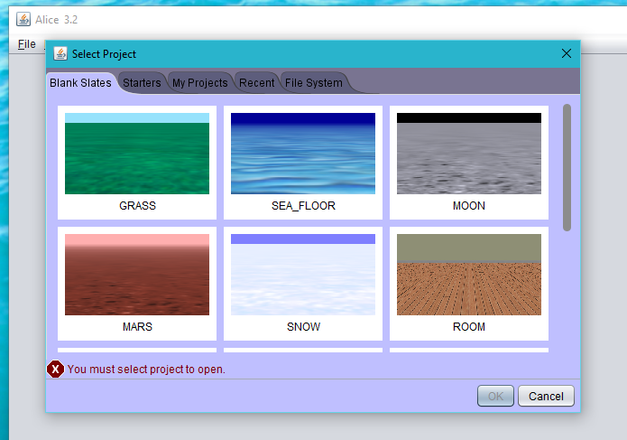
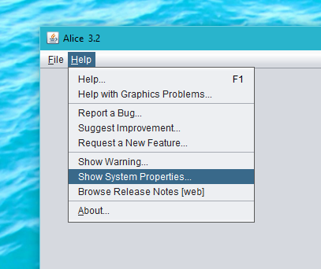
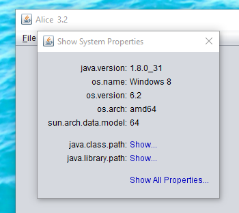
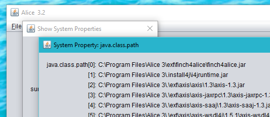

Finch 4 Alice
Ever wanted to control your Finch robot from within Alice 3? Well, now you can!
Finch 4 Alice provides a simple extension to Alice 3 that adds methods for controlling a Finch robot to all Transport subclass instances. Cross-platform support is provided out-of-box for Microsoft Windows, Apple Macintosh OS X, and Linux operating systems.
Contents
- Installation and Building the Project
Installation and Building the Project
Build Prerequisites
Alice 3
You must have an installation of Alice 3 on the build machine, preferrably installed in the default location. This location varies by platform, as shown in the following table:
| Platform | Default Installation Location |
|---|---|
| Windows | C:\Program Files\Alice 3 |
| Linux | ~/Alice3 |
| Max OS X | /Applications/Alice 3.app/Contents/Resources/app |
Finch 4 Alice has been tested against Alice version 3.2.5.0.0. Previous versions used a different type of installer and are not compatible.
To download a copy of Alice for your environment, visit the Alice website.
JDK
You must have the Java Development Kit (JDK) version 1.8 or newer installed and properly configured. You can obtain a copy of the JDK from Oracle, or from a distribution provided by your operating system vendor. OpenJDK should work fine, if you don't feel like using the Oracle proprietary JDK.
Installation
Finch 4 Alice provides several installation options. You can build and install the prject directly from the command line, create an interactive multi-platform installer to distribute and use on multiple machines, or you can build the Jar only for manual installation.
Direct install
If you wish to install Finch 4 Alice on the build machine, it can be installed directly by Gradle. To accomplish this, execute the following command:
./gradlew install
This will automatically perform the steps described under Manual installation.
Because Alice is installed system-wide by default on Windows and Macintosh OS X, you will need to ensure you execute the command as Administrator (root on OS X) or the installation will likely fail due to lack of permissions.
Under Linux, you should be able to run the install as a normal user, as long as Alice is installed in the default location under that user's home directory. If it is installed in a system-wide location like /bin, /usr/bin, or /usr/local/bin you will need to run the command as root with sudo.
Multi-platform installer
This installer is the easiest to use for most end-users who do not have access to command line tools like git and gradle. It provides an intuitive graphical installer that walks users through the installation process, doesn't require any special build tools, and will run on all of the supported platforms with a properly configured JRE.
./gradlew izPackCreateInstaller
Once generated, you can find the installer under build/distributions/finch4alice-<version>-installer.jar.
The installer Jar can be executed using the following command:
java -jar finch4alice-<version>-installer.jar
Depending on your operating system configuration, you may also have alternative launch options. For example, on Mac OS X systems with the Oracle JDK installed, you can launch the installer jar directly from Finder by simply double-clicking on the icon.
A native Microsoft Windows executable installer can also be created from the installer Jar with the following command:
./gradlew launch4j
The generated EXE will be placed under build/distributions/finch4alice-<version>-setup.exe.
Manual installation
If for some reason the above options don't work for your particular situation, or you simply enjoy getting into the nitty gritty aspects of software hacking, then this is the section for you.
To manually install Finch 4 Alice:
- First build the Jar as described above under Building the Jar file only.
./gradlew jar
- Create a new subdirectory under the Alice
extdirectory namedext/finch4alice.
mkdir /path/to/alice/ext/finch4alice
- Copy the generated Jar file
build/distributions/finch4alice-<version>.jarinto the Aliceext/finch4alicedirectory, and rename it tofinch4alice.jar.
cp ./build/finch4alice-0.3.jar /path/to/alice/ext/finch4alice/finch4alice.jar
- Create an Install4J vmoptions configuration file to instruct Alice to load the new Jar when it starts up.
- For Windows, copy the file
src/resources/Alice 3.vmoptions.windowsinto the Alice main folder and rename it toAlice 3.vmoptions. - For Linux, copy
src/resources/Alice 3.vmoptions.linux:
- For Windows, copy the file
cp "src/resources/Alice 3.vmoptions.linux" "/path/to/alice/Alice 3.vmoptions"
- For Mac OS X, copy
src/resources/Alice 3.vmoptions.linux:
cp "src/resources/Alice 3.vmoptions.linux" "/Applications/Alice 3.app/Contents/vmoptions.txt"
Because Alice is installed system-wide by default on Windows, you must use an Administrator account and will likely need to confirm a few UAC dialogs to copy and rename the files.
For Mac OS X, the commands will need to be executed by a user in the admin group, or as root (using sudo).
Under Linux, you should be able to run the install as a normal user, as long as Alice is installed in the default location under that user's home directory. If it is installed in a system-wide location like /bin, /usr/bin, or /usr/local/bin you will need to run the command as root with sudo.
Building the Jar file only
If Alice 3 is installed in the default location, executing the following command from within the project folder will build the Jar file.
./gradlew jar
If Alice is installed in a non-standard path, you can specify the correct path by providing it via the aliceDir command-line property value as follows:
./gradlew jar -PaliceDir=/path/to/alice3
Using Finch 4 Alice
Confirming installation
To ensure that everything is installed and configured properly:
Launch Alice
When prompted to load a project, simple close the dialog by clicking 'Cancel'.

- Select the
Help -> Show System Propertiesmenu

- Click
Show...to the right ofjava.class.path

- Verify that the finch4alice jar is listed at the beginning of the class path.

Connecting to a Finch
Now that you have Finch 4 Alice installed, what can you do with it? In this section, we'll go through a simple example and "kick the tires", so to speak.
Prerequisites
You need an installation of Alice 3, with Finch 4 Alice installed.
You need a Finch robot, properly connected to your computer. If you don't happen to have a Finch, they can be purchased from the Finch Robot website.
You will need to install the BirdBrain Robot Server. You can find installers for various operating systems in the BirdBrain Robot Server GitHub repository. Perhaps surprisingly, Finch 4 Alice doesn't actually communicate directly with a Finch robot. It relies on the BirdBrain Robot Server to do that. This simplifies the implementation and reduces the number of dependencies that would need to be patched into Alice.
Example project
- Start the BirdBrain Robot Server and connect your Finch robot. The BirdBrain server window should look as follows when it detects a connected Finch:

- Launch Alice and when prompted to select a project, create a new project based on the 'GRASS' theme.
Click
Setup SceneClick
Transport classesClick
Watercraft classesClick
new FishingBoat()Click
Edit CodeDrag the
finchSetLEDprocedure from the pane on the left into the code window for 'myFirstMethod'- Select
Custom Whole Number..., then0for the second parameter and0for the third parameter. Enter
255when prompted for the custom value for the first parameter.Drag the
delayprocedure into 'myFirstMethod'Select
2.0for the number of seconds to delayDrag the
finchSetLEDprocedure into 'myFirstMethod'Select
0for all three parameters.Drag the
sayprocedure into 'myFirstMethod'Select
Custom TextString...and enterAll donewhen prompted.You are now ready to try running your test project. Click the
Runbutton and you should see the LED in the nose of your Finch turn red for two seconds, then turn off.
More example projects can be found in the examples subfolder.
How it works
Alice 3 doesn't directly provide an extension mechanism for adding additional functionality such as access to external libraries or jars from within the Alice editor itself.
To work around this, Finch 4 Alice causes the Java runtime to load a custom Jar file into the class path before the other Alice classes are loaded. Due to the way that the Java class loader works, classes found earlier in the class path will override classes of the same name that are found later (that is, a first-come-first-served policy).
The Jar generated by Finch 4 Alice contains a replacement version of the org.lgna.story.STransport class within Alice which all "transport" objects (for example Automobile or Boat) are subclasses of. Not counting inherited methods or properties, the implementation of that class within Alice itself is pretty minimal, consisting of a constructor and a single property. That simplicity made it an ideal target for adding additional methods to.
One may wonder "Why not add a new type of object within Alice to represent a Finch?" In one word: Complexity. Due to how the Alice code is currently structured, adding an additional object type that could be selected from within the UI would have had far-reaching implications in terms of the number of classes that would need to be patched. In the interests of promoting Occam's razor and the principle of simplicity, we chose to take a simpler route. Specifically, it was easier to reason about what was needed to accomplish the task and get on with playing around with a Finch from within Alice :)
Additions to the STransport API
Finch 4 Alice works by extending the STransport parent class within Alice. Several new procedures and functions are added that expose the full range of functionality provided by the Finch robot.
Check out the Javadoc API for the full API details.
Troubleshooting FAQ
Symptom: Alice raises an exception when one of the example projects is loaded.
Cause: This is most likely caused by trying to load a project into an installation of Alice that has not yet had Finch 4 Alice installed. The example projects contain references to the new methods added by Finch 4 Alice, and exceptions are raised when those instructions are processed without the Finch 4 Alice code loaded.
Symptom: On Mac OS X, the finch responds sluggishly or infrequently when the BirdBrain Robot Server is not the foreground application.
Cause: This behavior is usaully the result of the "app nap" feature of Mac OS X, which pauses background applications to reduce power usage. The app nap feature should be disabled for the BirdBrain Robot Server since it must maintain a continuous connection to the Finch, and the pauses introduced by app nap do not allow that.
To disable app nap for the BirdBrain Robot Server:
- Open the Applications folder in Finder
- Select the BirdBrain Robot Server application
- Use Command-I or right-click and select Get Info to open the Info dialog
- Check "Prevent App Nap" and close the Info dialog
Contributing
Contributions are very welcome and are accepted through pull requests. Simply create a fork on GitHub, commit and push your updates to your fork, and then submit a pull request for review.
Bugs and Features Requests
Please submit all bug reports and feature requests to the project issue tracker.
Disclaimers & License
The Finch 4 Alice project is not affiliated with either the Finch or Alice 3 projects or their respective intellectual property holders.
The Finch robot is produced by BirdBrain Technologies LLC.
Alice 3 is developed by Carnegie Mellon University.
This software interacts with the BirdBrain Robot Server which is covered by a Creative Commons Attribution-ShareAlike 3.0 Unported License.
Finch 4 Alice is released under the BSD 2-Clause License
Copyright (c) 2015, Brad Fisher
All rights reserved.
Redistribution and use in source and binary forms, with or without modification, are permitted provided that the following conditions are met:
Redistributions of source code must retain the above copyright notice, this list of conditions and the following disclaimer.
Redistributions in binary form must reproduce the above copyright notice, this list of conditions and the following disclaimer in the documentation and/or other materials provided with the distribution.
THIS SOFTWARE IS PROVIDED BY THE COPYRIGHT HOLDERS AND CONTRIBUTORS "AS IS" AND ANY EXPRESS OR IMPLIED WARRANTIES, INCLUDING, BUT NOT LIMITED TO, THE IMPLIED WARRANTIES OF MERCHANTABILITY AND FITNESS FOR A PARTICULAR PURPOSE ARE DISCLAIMED. IN NO EVENT SHALL THE COPYRIGHT HOLDER OR CONTRIBUTORS BE LIABLE FOR ANY DIRECT, INDIRECT, INCIDENTAL, SPECIAL, EXEMPLARY, OR CONSEQUENTIAL DAMAGES (INCLUDING, BUT NOT LIMITED TO, PROCUREMENT OF SUBSTITUTE GOODS OR SERVICES; LOSS OF USE, DATA, OR PROFITS; OR BUSINESS INTERRUPTION) HOWEVER CAUSED AND ON ANY THEORY OF LIABILITY, WHETHER IN CONTRACT, STRICT LIABILITY, OR TORT (INCLUDING NEGLIGENCE OR OTHERWISE) ARISING IN ANY WAY OUT OF THE USE OF THIS SOFTWARE, EVEN IF ADVISED OF THE POSSIBILITY OF SUCH DAMAGE.